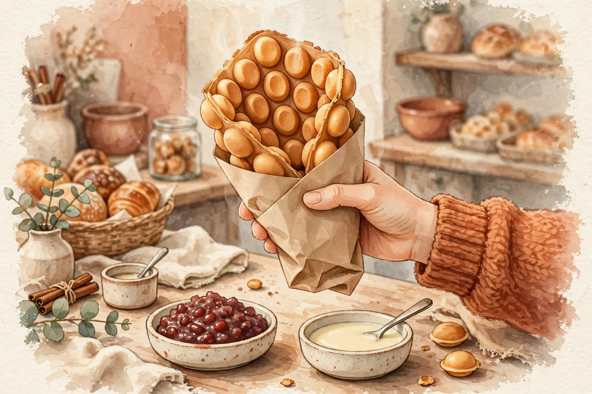

Bubble Waffles
Crisp-edged, chewy-centred Hong Kong egg waffles, made to order and served warm — plain or dressed with classic toppings.
From crackly pineapple buns to silky egg tarts and made-to-order celebration cakes, Breadpoint has been Low Friar Street's little taste of Hong Kong since 2016.


Small batches, baked through the day. Ask in store for today's full selection.

Crisp-edged, chewy-centred Hong Kong egg waffles, made to order and served warm — plain or dressed with classic toppings.
Soft, pillowy buns under a golden crackled crust — the Hong Kong bakery icon, best eaten still warm from the tray.

Flaky pastry shells filled with silky, just-set custard and a whisper of caramel on top. Impossible to eat just one.

Light sponge cakes with fresh cream and fruit, made to order for birthdays and special occasions. Call ahead to arrange yours.
Breadpoint opened its doors in 2016, bringing the flavours of a Hong Kong bakery to the heart of Newcastle upon Tyne. Part artisan bakery, part neighbourhood café, it is the kind of place where the smell of fresh buns pulls you in off the street.
Everything is baked in small batches through the day — pineapple buns with their signature crackled tops, silky egg tarts, bubble waffles made to order — alongside proper tea and coffee in a warm, easygoing café setting.
Find us on Low Friar Street in Newcastle city centre, a short stroll from the Central Station.
13 Low Friar Street
Newcastle upon Tyne
NE1 5UE
0191 221 0229
For celebration cake orders and larger requests, please call ahead.
Mon – Fri · 10:30am – 5pm
Sat – Sun · 11am – 5pm
Open seven days a week.